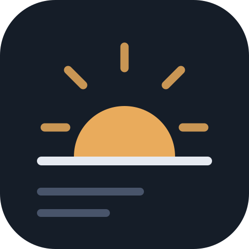

Morning Brief
이미 설치된 앱으로 열려 있습니다
브리핑 열기방법 1 · 권장
브라우저에서 바로 설치합니다. 내려받을 파일도, 따로 허용할 설정도 없습니다.
크롬·엣지에서 열면 이 버튼이 켜집니다.
아이폰 · 아이패드
사파리에는 설치 버튼을 띄우는 기능이 없어서 직접 넣어야 합니다.
사파리에서 열어야 나옵니다. 크롬·다른 앱의 내장 브라우저에서는 안 보입니다.
방법 2 · 안드로이드
설치형 앱 파일을 직접 받습니다. 방법 1이 안 될 때 쓰세요.
morning-brief.apk 받기 3.7 MB서명 없는 디버그 빌드라, 설치할 때 폰 설정에서 출처를 알 수 없는 앱 설치를 한 번 허용해야 합니다. 플레이스토어 앱과는 별개로 설치됩니다.